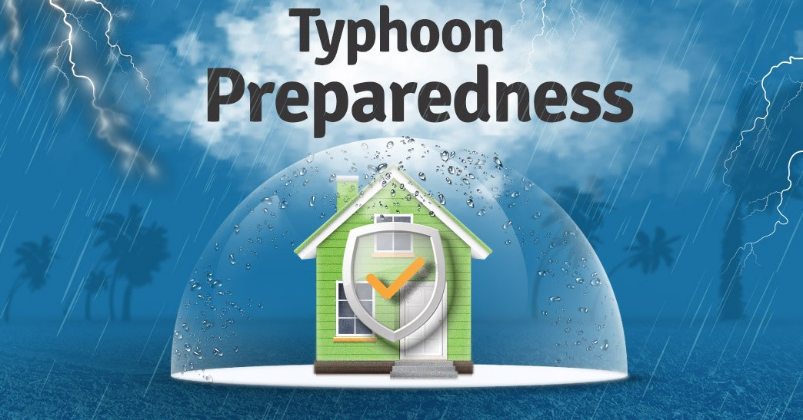
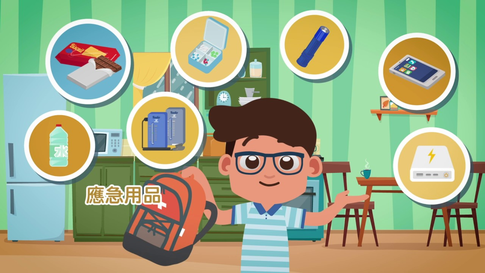

Home
Storm Signal
Contacts
Prevention
Evacuation Plan
×
Types of Disaster
Protocols
Facqs and Trivia
Weather
Tropical Cyclone
☰


Precautionary Measures We Follow Before, During, And After A Typhoon
BEFORE
Help your family check and fix your house for any damage (especially the roofs and windows), so it can withstand the strong winds.
Stock up an adequate supply of drinking water, and water for cleaning or other purposes.
Teach younger members of your family what to do during a typhoon.
DURING
Stay calm and be alert.
Stay indoors. Postpone any plans of travels or errands.
Be ready to evacuate if necessary. Leave your house as soon as you realize you are not safe.
AFTER
Help your family check and fix your house for any damage (especially the roofs and windows), so it can withstand the strong winds.
Stock up an adequate supply of drinking water, and water for cleaning or other purposes.
Teach younger members of your family what to do during a typhoon.